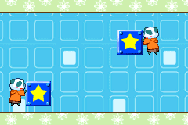
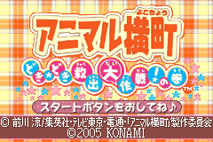

Animal Yokochou - Doki Doki Kyuushutsu Daisakusen! no Maki (Japan)
Stateless / Passcode 💾 MultiBoot
Cartridge Identity
- Game Code
BAYJ(FamilyBAY)- Header Title
ANIYOKO- Maker / Revision
A4/ rev0- ROM Size
- 16.0 MiB (16,777,216 B)
- Save Media
None / Unknown- SHA-256
e86be1b1579e663acfa4d7002d091071595a5015960cebbee836b9846be983bc- Engine / SDK Group
comm-014(25 families)
Screenshots


Link Cable & Multiplayer Communications
This title contains detected communication capabilities: 💾 MultiBoot.
Detailed protocol specifications, SIO registers, Joybus commands, and MultiBoot sequences are documented in the Link & Multiplayer Reference.
- Single-Cart MultiBoot
- Single-Cartridge MultiBoot (Download Play) client/server handler · Thumb SWI 0x25 (
0xDF25):0x1f861e,0x24e1ee,0x2c3970,0x2c5b14
Cartridge Storage Architecture: Stateless / Passcode
Zero non-volatile battery hardware: This cartridge PCB contains ROM only (no SRAM, Flash, or EEPROM chips). Progression is preserved via on-screen passcodes or session-only gameplay. No
.sav file is generated or required.
ROM Assets, Compression & Audio
- BIOS Compression
- LZ77 (
0x10): 0 streams · RLE (0x30): 0 streams - ROM Pointer Tables
- 33 tables (0 pointing to validated compressed streams)
- SDK Backup Tags
SRAM_V113
Asset Map (formatkit.asset-map.v1)
Download BAYJ-r0-e86be1b1579e663a.asset-map.json.gz (204,086 B (199.3 KiB)) Verified PASS · 45.74% coverage
| Metric | Bytes / Value | Entries |
|---|---|---|
| Identified | 6,646,525 B (6.34 MiB) (39.62%) | 1,664 |
| Mapped | 0 B (0.00%) | 0 |
| Opaque | 1,027,524 B (1003.4 KiB) (6.12%) | 1 |
| Unknown | 9,103,167 B (8.68 MiB) (54.26%) | 1,605 |
| Total ROM Size | 16,777,216 B (16.00 MiB) | 3,270 |
| Coverage % | 45.74% | — |
| Entries w/ Code Refs | 1,433 / 3,270 (43.82%) | — |
Top Identified Formats: audio.konami-sample (434 · 5,802,737 B (5.53 MiB)) · compress.bios-huffman (53 · 569,804 B (556.4 KiB)) · gfx.gba-palette (1,176 · 273,792 B (267.4 KiB)) · gba.rom-header (1 · 192 B)
Largest unknown Extents (Headerless / Custom Asset Candidates)
| Offset | Size | Shannon Entropy | Code Refs |
|---|---|---|---|
0x00AE9034 | 216,404 B (211.3 KiB) | 4.403 bits/B | 0 |
0x00B41AA8 | 191,980 B (187.5 KiB) | 3.182 bits/B | 0 |
0x008A2C88 | 156,252 B (152.6 KiB) | 4.366 bits/B | 0 |
0x00A898B0 | 155,616 B (152.0 KiB) | 5.996 bits/B | 0 |
0x00C90200 | 154,644 B (151.0 KiB) | 4.993 bits/B | 0 |
gzip -dk BAYJ-r0-e86be1b1579e663a.asset-map.json.gz && gbakit map verify rom.gba BAYJ-r0-e86be1b1579e663a.asset-map.json
gbakit assets export rom.gba --asset-map BAYJ-r0-e86be1b1579e663a.asset-map.json -o out/Text, Fonts & Scene Data
- Primary Text Encoding
- Plain ASCII (uncompressed) (
212ASCII strings ·200Shift-JIS runs) - Font & VWF Indicators
- VWF Width Table 1bpp Font · BIOS SWIs: BitUnPack
0x10:3· LZ770x11/12:1· Huffman0x13:3· RLE0x14/15:3 - Scene & Packaging
18ROM pointer tables (≥32 entries,5≥200) ·105relativeu32TOCs ·528OAM metasprite hits
Hardware MMIO Subsystems
ppu_display0x800155c